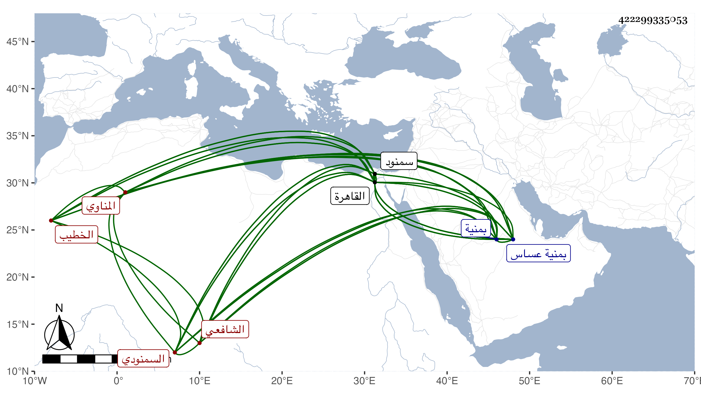

0902Sakhawi.DawLamic.ITO20230111-ara1.EIS1600.422299335053
Biography ID: 422299335053
412
عبد الرحمن بن يحيى بن موسى بن محمد الخطيب تقي الدين أبو المعالي ابن الشرف العساسي بمهملات ثانيتها مشددة المناوي السمنودي الشافعي الآتي أبوه وابنه محمد ويعرف بالخطيب العساسي . ولد في رمضان سنة إحدى عشرة وثمانمائة بمنية عساس وتحول منها وهو مرضع مع أبويه إلى سمنود فقطنها وحفظ القرآن والمنهاج والملحة والرحبية للموفق محمد بن الحسن والميزان الوفي في معرفة اللحن الخفي والمثلث في اللغة كلاهما للعز الدريني وعرضهما على ابن الجزري والبرماوي والزين القمني وأجازوا له بل سمع على أولهم المسلسل وغيره ، ولقيته قديما بالقاهرة ثم بسمنود ثم بمنية عساس وقرأت عليه بجامعها المسلسل ، وهو إنسان خير مديم التلاوة راغب في الأمر بالمعروف والنهي عن المنكر واشتغال يسير وفهم وصفاء زائد ، خطب ببلده وتكسب بالشهادة بل ربما باشر قضاءها وقتا ولكنه أعرض عنه ، وحج وتكرر قدومه القاهرة وخطب في جامعها الأزهر أحيانا وحضر عندي في مجالس الاملاء وغيرها . مات في ليلة الجمعة سادس عشر صفر سنة خمس وتسعين بمنية عساس ودفن بها بعد أن عجز وكف ونعم الرجل رحمه الله وإيانا .
